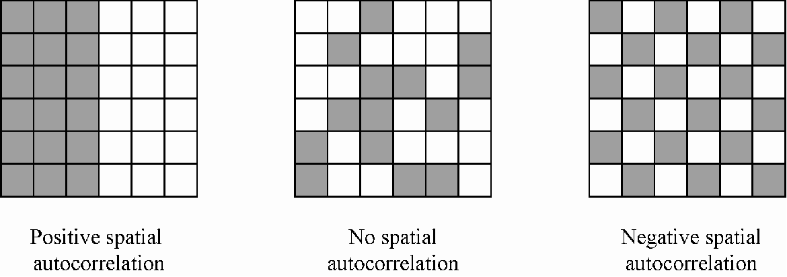

Spatial is Special
Spatial data has special properties that we must take into consideration
First Law of Geography
"Everything is related to everything else,
but near things are more related than distant things."
-Waldo Tobler

First Law of Geography
This might seem obvious:
- Students in the same class interact more.
- Orca pods in different areas develop different dialects.
- Hemlocks in BC are more related to each other than to hemlocks in NB.
First Law of Geography
Not a grantee of similarity.
- Vancouver's average snowfall is < 30 cm/yr
- Grouse Mountain frequently exceeds 9 m/yr
First Law of Geography
What do you have in common with your neighbor?
- Are you in the same city?
- Do you have the same major?
- Are you from the same hometown?
Spatial Homogeneity
Even distribution of discrete objects trough space, or values (qualitative or quantitative) across a continuous field.
Spatial Heterogeneity
Uneven distribution of discrete objects trough space, or variation of values (qualitative or quantitative) across a continuous field.
- Opposite of Spatial Homogeneity

Spatial Autocorrelation

Measure of similarity across space.